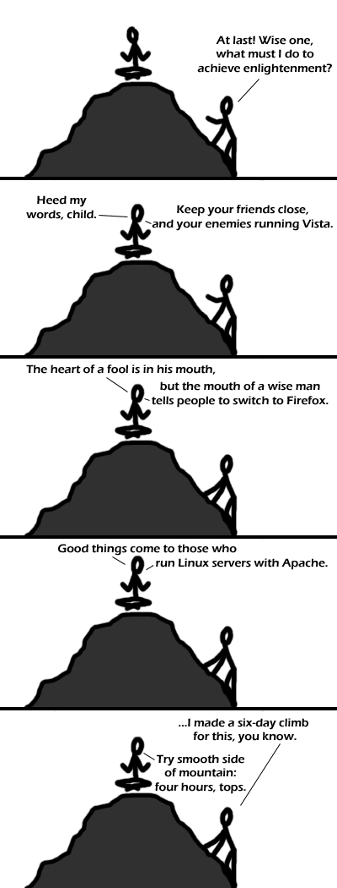

Comic JK 116
When I Feel Like It
⇤
<
?
>
⇥

⇤
<
?
>
⇥
Forum
.
RSS
.
Digg
.
Facebook
.
Reddit
.
Twitter
.
Stumbleupon
Firefox? Chrome is faster and cleaner. And Adblock is solving a non-existent problem. You just kind of realise they don't really bother you (I mean, your page has 4 ads... think about it!) > You're joking about Adblock right? It's not the ads, it's that they take much longer to load than the real content, thus slowing down the entire experience. chrome is better, yet firefox is more widely used, thus making it better (this doesnt apply to IE though) We use firefox for the add-ons, not the speed. Get over yourself. ^^^^ what he said, but the whole not taking 5 hours to start up is a nice bonus. > Well then maybe you can explain to me why, if chrome is faster and cleaner it eats up all my memory and has 24 Processes open when Firefox only needs 1. It's part of the design of Chrome: give each tab its own process so that if one crashes, the whole browser doesn't go with it. - ezziey potato firefox takes longer to start up, but it loads pages faster imo - V AdBlock for Chrome doesn't block the ads from loading; it loads them, then simply hides them from view. Firefox's actually prevents them from loading. Given how unscrupulous some site are with their advertisers, I appreciate the difference. "The heart of a fool is in his mouth, etc..." sounds like something from the book of Proverbs. Hovering? Python!